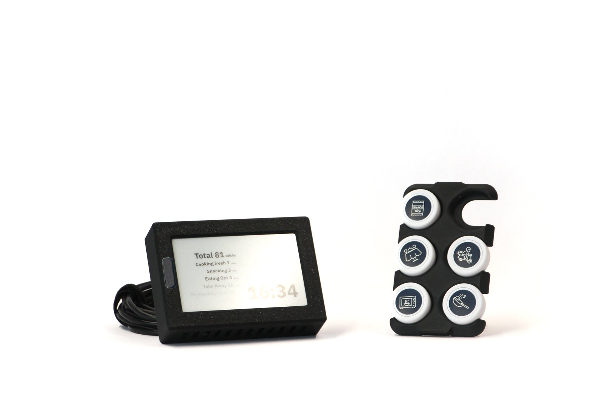
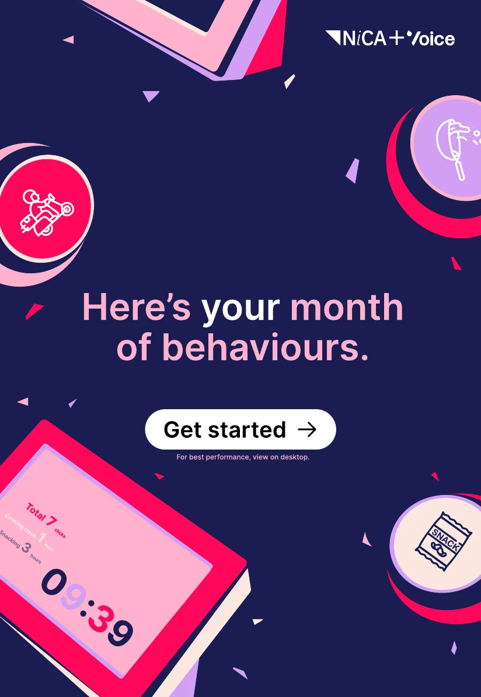
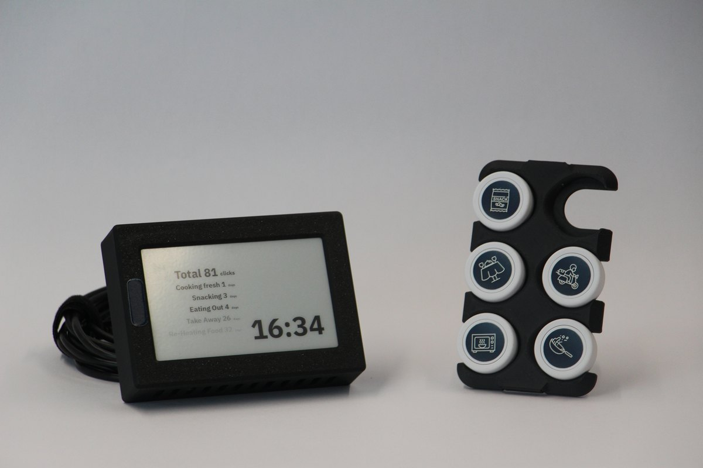
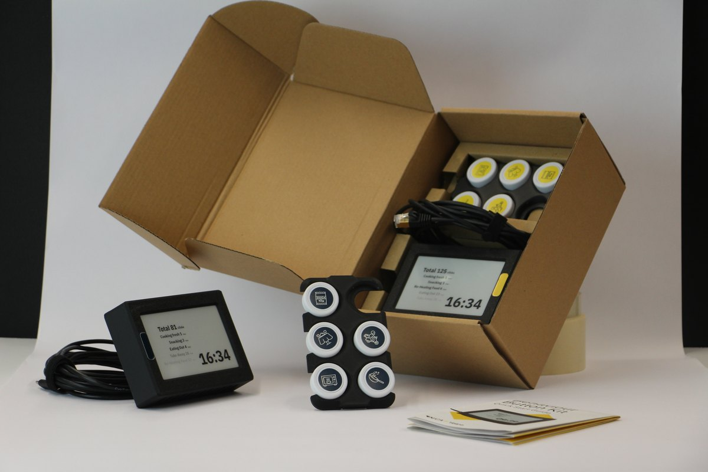

Product design · Research toolkit
Everyday behaviours.
One button at a time.
A physical toolkit for recording everyday activities, with a personal report that brings those moments together.
Explore the experience
A small action, captured in the moment
From everyday activity
to a visible pattern.
An activity, a button.
Participants use labelled buttons to record activities as they happen.
A moment, collected.
The hub brings the button presses together and gives visible feedback.
A contribution, returned.
A personal report brings the recorded activities into summaries and visual patterns.
01 · Physical design
An object for
everyday life.
The hub sits alongside familiar, physical buttons. Its display gives participants a view of their recorded activities.
Explore the enclosure’s shape, screen recess and rear details below.
Design 7 enclosure preview.
The complete assembled kit is shown in the photographs.
Drag to rotate · Scroll or pinch to zoom
The interactive model could not load. You can still explore the kit in the photographs.
02 · Participant experience
From a button press
to a personal story.
The experience continues beyond the physical kit. Participants receive a visual report that brings their recorded activities together.
The report moves from an overview into weekly patterns, then brings the month together as a behavioural fingerprint.
Open full reportStandalone HTML5 · Example participant report
The charts show recorded button presses, rather than time spent on an activity.
View the original Figma prototype
I no longer own or control this prototype, so the link may stop working in the future.

Select “Try the report” to begin.
A toolkit, considered as a whole
More than an enclosure.
The buttons, display, holder and supporting materials make up the participant’s experience of the kit.

